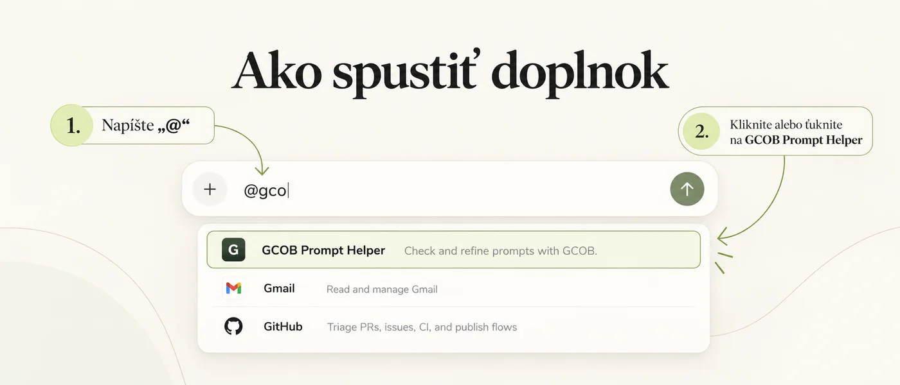

Prineste si svoj návrh.
Začnite vlastnými slovami. GCOB rozpoznáva význam bez nutnosti používať nadpisy alebo špeciálnu šablónu.
Doplnok do ChatGPT pre lepšie prompty.
Premeňte prvotný nápad na jasný a dobre štruktúrovaný prompt. GCOB Prompt Helper Plugin vám konkrétnymi otázkami pomôže spresniť cieľ, kontext, výstup a obmedzenia. Potom si vyberiete: skopírovať vylepšený prompt alebo ho spustiť.
Prístup k ChatGPT závisí od oprávnení vášho účtu a pracovného priestoru.
Začnite vlastnými slovami. GCOB rozpoznáva význam bez nutnosti používať nadpisy alebo špeciálnu šablónu.
Odpovedajte na jednu podstatnú otázku po druhej. Vyberte si návrh, preskočte medzeru alebo uveďte vlastnú odpoveď.
Po vylepšení sa výslovne rozhodnite, či chcete zobraziť výzvu alebo spustiť úlohu. Samotné vylepšenie nespustí vykonanie.
GCOB Prompt Helper 1.0.10 bol publikovaný v ChatGPT. Overený balík ZIP v1.0.10 si môžete stiahnuť nižšie.
Stiahnuť plugin.zip (v1.0.10)Stiahnite si plugin.zip prostredníctvom odkazu vyššie a zachovajte archív neporušený.
V obrazovke Nastavenia → Doplnky kliknite na Prehliadať katalóg.
V katalógu otvorte ponuku Pridať a vyberte Nahrať archív doplnku. Zvoľte stiahnutý súbor plugin.zip a dokončite nahrávanie. Ak overenie nahlási problém, odložte si chybovú správu a kontaktujte vydavateľa cez podporu.
V katalógu doplnkov otvorte GCOB Prompt Helper. Ak je potrebné dokončiť inštaláciu a je zobrazené tlačidlo plus (+), kliknite naň. Ak je doplnok už nainštalovaný, pokračujte.
Kto môže importovať ZIP? Nahrávanie ZIP vyžaduje dostupnú možnosť nahrávania a príslušné oprávnenia. V spravovanom pracovnom priestore môže byť potrebné, aby import vykonal oprávnený vlastník alebo administrátor. Stiahnutie ZIP nemení oprávnenia v ChatGPT.
GCOB Prompt Helper obsahuje iba skill: nepotrebuje samostatné pripojenie k službe, API kľúč ani účet GitHub.
Skontrolované podľa slovenského rozhrania: 26. október 2026. Oficiálne pokyny na nahrávanie ZIP · Použitie doplnku.
Po nainštalovaní doplnku ho môžete vyvolať priamo v novej konverzácii ChatGPT.
Do poľa správy napíšte @ a prípadne začnite písať gco, aby sa zobrazil zoznam doplnkov.
Kliknite alebo ťuknite na GCOB Prompt Helper v ponuke. Potom vložte návrh promptu a odošlite ho.

Doplnok následne položí potrebné objasňujúce otázky. Na konci si zvolíte, či chcete vylepšený prompt zobraziť alebo spustiť.